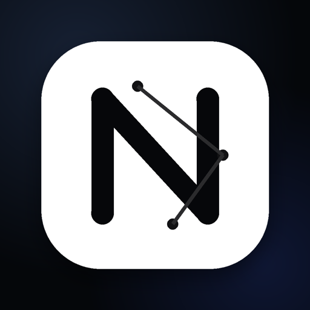
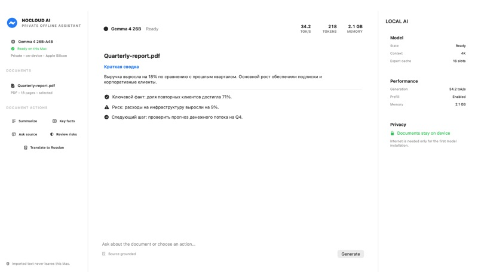
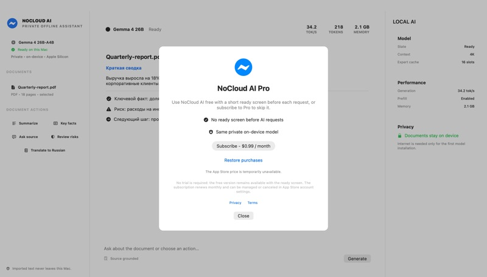
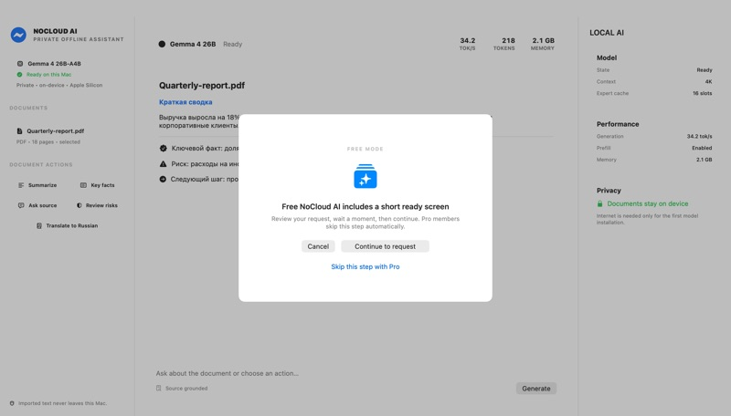

$0
Free
Use local models and document actions. A short NoCloud AI screen appears before a request.

NoCloud AIPrivate AI. On your Mac.
Work with documents using local Gemma models on Apple Silicon. Your files and prompts stay on your computer during generation.
Free to use. Optional Pro removes the short pre-request screen for $0.99/month.
A focused document workflow
Inside the app



Choose the model you can run
NoCloud AI shows download size, recommended memory and required free space before you install a model. Larger models download only when you choose them.
Simple entry
$0
Use local models and document actions. A short NoCloud AI screen appears before a request.
$0.99 / month
Removes the pre-request screen. No trial is required because the free version stays available.
FAQ
The app description states that documents and prompts stay on the computer during local generation. Internet is needed for the first model download.
A Mac with Apple Silicon and macOS 26 or later is required.
Yes. The free version remains usable; Pro removes the short screen shown before a request.
Available now